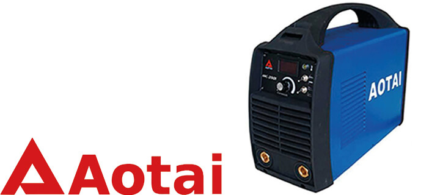
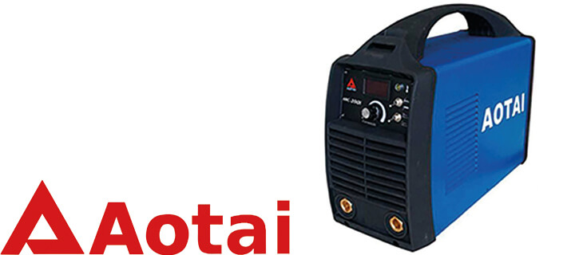
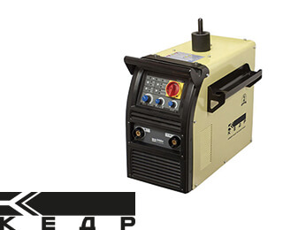
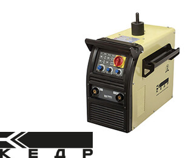

Купите сварочное оборудование любой сложности и получите комплект расходных материалов на месяц бесплатно.
Наш менеджер поможет подобрать оборудование под любой запрос, а так же проконсультирует по любым вопросам.
Ручная дуговая сварка штучными электродами с покрытием. Применяется для сварки углеродистых и нержавеющих сталей.
Цену можно узнать по запросу
 

Цену можно узнать по запросу


Цену можно узнать по запросу


Цену можно узнать по запросу
-mob.jpg)
.jpg)
18 010₽
Полуавтоматическая сварка электродной проволокой в среде защитного газа - инертного (аргона) или активного (углекислого газа). Применяется для сварки сталей (в том числе нержавеющих) и алюминиевых сплавов.
 

Цену можно узнать по запросу


Цену можно узнать по запросу


Цену можно узнать по запросу


Цену можно узнать по запросу

Цену можно узнать по запросу
.jpg)
-mob.jpg)
136 220₽
Ручная сварка неплавящимися вольфрамовыми электродами в среде защитного газа - аргона. Метод TIG на постоянном токе (TIG-DC) применяют для сталей, метод TIG на переменном токе (TIG-AC) - для алюминиевых сплавов.


Цену можно узнать по запросу


Цену можно узнать по запросу


Цену можно узнать по запросу

-mob.jpg)
87 370₽
Cварочный процесс, при котором детали соединяются швом, состоящим из ряда отдельных сварных точек (литых зон), частично перекрывающих одна другую и образующих герметичный шов.

Цену можно узнать по запросу

Цену можно узнать по запросу

Цену можно узнать по запросу
Цену можно узнать по запросу


Цену можно узнать по запросу

Цену можно узнать по запросу


Цену можно узнать по запросу
Цену можно узнать по запросу
Cварка электрической дугой, горящей между концом сварочной проволоки и свариваемым металлом под слоем флюса. Применяется в стационарных цеховых условиях для всех металлов и сплавов, включая разнородные металлы толщинами от 1,5 до 150 мм.

Цену можно узнать по запросу
Цену можно узнать по запросу

Цену можно узнать по запросу
.jpg)
-mob.jpg)
136 220₽
Все расходные материалы в наличии.
Помогаем сократить операционные расходы, засчет того, что наши клиенты могут купить все в одном месте.
Компания «Металлон Урал» работает на рынке более 10 лет и является комплексным поставщиком решений для производственных предприятий страны в области сварки: TIG, MIG/MAG, MMA, плазменной резки, компрессорного оборудования, газовой резки, электроинструмента, систем промышленной вентиляции и других направлений.
«Металлон Урал» ставит в приоритет растущие потребности клиентов. Компания постоянно расширяет сеть поставщиков, благодаря чему все необходимое можно купить в одном месте, затратив минимум усилий и времени на выбор техники и оформление документов. В итоге это значительно сокращает операционные расходы Клиента.
Почему выгодно сотрудничать с «Металлон Урал»:

Офис компании
«Металлон Урал» - официальный дилер ведущих мировых производителей оборудования, запасных частей и расходных материалов таких направлений

Надежный поставщик и надежный заказчик – основная ценность компании.
«Металлон Урал» - официальный дилер ведущих мировых производителей оборудования, запасных частей и расходных материалов таких направлений, как:
- сварка: Merkle, Fubag, EWM, BlueWeld, Dinse & ESS, КЕДР, Dalex, AOTAI;
- плазменная резка: Hypertherm, Kjellberg;
- компрессорное оборудование: ABAC, COMARO, Remeza, Berg, Atlas Copco;
- газовая резка: Harris, GCE;
- системы промышленной вентиляции: Donaldson, Tigemma.
Сервисное обслуживание оборудования
Консультация сервисной службы по всем продуктовым линейкам, в т.ч. по сварочному оборудованию и системам плазменной резки – 24 часа в сутки: диагностика оборудования, пусконаладочные работы, планово-предупредительный ремонт, гарантийный ремонт, модернизация оборудования.
Сотрудники компании «Металлон Урал» обеспечат Вас продукцией высокого качества. Компания имеет свой склад продукции, что позволяет обеспечить поступление товаров в необходимом количестве, в нужное место и точно к назначенному сроку.
По вопросам покупки оборудования, а также для получения справочной информации по подбору сварочных аппаратов и расходных материалов, обращайтесь к менеджерам «Металлон Урал» по номеру 8-800-775-09-84 или электронной почте svarka@metallon-group.ru
По вопросам работы сервисной службы напишите по эл. адресу: service@metallon-group.ru
Компания имеет свой склад продукции, что позволяет обеспечить поступление товаров в необходимом количестве, в нужное место и точно к назначенному сроку.
Консультация сервисной службы по всем продуктовым линейкам, в т.ч. по сварочному оборудованию и системам плазменной резки – 24 часа в сутки: диагностика оборудования, пусконаладочные работы, планово-предупредительный ремонт, гарантийный ремонт, модернизация оборудования.

Сервисное обслуживание оборудования
По вопросам покупки оборудования, а также для получения справочной информации по подбору сварочных аппаратов и расходных материалов, обращайтесь к менеджерам «Металлон Урал» по номеру 8-800-775-09-84 или электронной почте svarka@metallon-group.ru
Специалисты компании проходят регулярное обучение и обязательную сертификацию на заводах-производителях оборудования. Средний опыт работы сотрудников «Металлон Урал» более 5 лет.
Срок поставки от 1 дня за счет отлаженной логистики и наличия склада. Бесплатная доставка до предприятия/офиса/завода.
Весь необходимый спектр оборудования можно закупить в одном месте, выгодно сократив расход времени и денег: сварочное оборудование под любые задачи производства, горелки, расходные материалы: сопла, наконечники и т.п.
Гарантированное качество продукции: от 2 до 5 лет и более. Надежный сервис на протяжении всего проекта, обеспечивается собственными силами специалистов компании.
Оптимальные решения в промышленной сварке
для всех популярных видов сварки: MMA, MIG/MAG, TIG, а также аппараты SAW-сварки, контактной сварки, плазморезы и машины автоматической резки. Fubag предлагает новые виды горелок и полный ассортимент универсальных расходных материалов, которые подходят для сварочных горелок большинства производителей. Новые серии: INTIG – новые мощности в серии аргонодуговой сварки, SW/TW – сварка под слоем флюса, INCUT – автоматическая резка металла, TS – аппараты контактной сварки.
Инновационные технологии в действии:
EWM forceArc pulse обеспечивает стабильную по направленности, мощную сварочную дугу с минимальной теплоотдачей и глубоким проваром. Технология идеально подходит для работы с нелегированными, низколегированными и высоколегированными сталями, а также высокопрочным мелкозернистыми сталями. Новинки года: TITAN XQR – индивидуальная конфигурация в зависимости от требований заказчика, TETRIX 230/300 SMART 2.0 PULS – универсальное применение аргонодуговой сварки, TAURUS 400 + DRIVE 4L BASIC – работа в экстремальных условиях.
Технологии, инновации, развитие.
В текущем году инженеры BLUEWELD расширили функционал своих моделей в работе с алюминием, а также начали оснащать аппараты системой визуализации сварочного процесса WAVE OS – STRAMIG 243 WAVE. Благодаря данной технологии можно отслеживать, анализировать и контролировать производственный процесс, это гарантирует качество и повторяемость выполнения работ. Программы сварки можно настроить согласно индивидуальным потребностям или использовать многочисленные программы, хранящиеся в памяти. К другим новинкам года относятся аппараты: GALAXY 300 SYNERGIC / 400 SYNERGIC – отличное качество сварного шва.
Сварочное оборудование будущего.
Компания Merkle (Германия) ведет свою деятельность с 1964 года. Более полувека ведутся непрерывные разработки и исследования в области электросварки, плазменной сварки, разрабатывается программное обеспечение для более рационального и эффективного управления сварочными процессами. Максимальная универсальность сварочных аппаратов достигнута с помощью технологий DeepArc: многократное увеличение скорости сварки, концентрированный прогрев, глубокий провар шва, отсутствие брызг и ColdMIG: существенное снижение теплоотдачи, сварка тонких листов металла, сварка с зазорами, сварка разных металлов и сплавов. Еще один прорыв – технология TEDAC – это дистанционное управление и контроль за сваркой с горелки.
Самое важное: качество и инновации.
Компания была основана в 1954 году, Германия. Традиционно высокое качество Dinse на протяжении уже более 60 лет является основой для развития самых современных сварочных систем и продуктов. Основная продукция: компоненты сварочных систем: источник питания, блок охлаждения, механизм подачи проволоки, функциональный концепт, аксессуары, шланг-пакеты; сварочные инструменты – горелки для ручной и автоматической сварки, аксессуары; системы подачи проволоки – MIG/MAG, TIG/WIG, лазерная сварка.
Оптимальное соотношение цены и качества.
«Кедр» предлагает широкий ассортимент аппаратов для сварочных работ, обладающих выносливостью в режиме жесткой эксплуатации при любых погодных условиях, экономичностью, в энергопотреблении и высокой производительностью. Эргономика, функциональность и надежность – основные критерии сварочных инверторов Кедр.
Оборудование для контактной и точечной сварки.
Немецкая компания Dalex – крупнейший производитель машин и оборудования для контактной точечной сварки, рельефной сварки, шовной (роликовой) сварки, а также в линейке товаров – роботизированные комплексы для автомобилестроения, подвесные сварочные клещи контактной сварки. Данное оборудование подходит для работ с любыми видами металлов и сплавов, включая цветные металлы, высоколегированную сталь, алюминий, нержавейку и прочее.
Ведущий поставщик профессионального оборудования.
Уже более 20 лет компания Aotai является одним из ведущих поставщиков профессионального оборудования для сварки и резки и успешно развивается на рынках Китая и Европы. Компания предлагает более ста моделей сварочных аппаратов различных серий: MMA, TIG, MIG/MAG, SAW, Plasma CUT, оборудование автоматизации и роботизации.
Гарантия на сварочные аппараты 5 лет.
Компания ГК «Сварог» совместно с заводом Shenzhen Jasic Technology поставляет на российский рынок инвентарное сварочное оборудование, а также полный спектр необходимых комплектующих, аксессуаров и расходных материалов. Гарантия на профессиональные и бытовые сварочные инверторы – 5 лет. Сорок моделей сварочных аппаратов прошли аттестацию в Национальном Агентстве Контроля Сварки, что подтверждает высокое качество продукции. Для обеспечения качественного сервиса на территории России работают 190 авторизированных сервисных центров.
Расходные материалы, горелки, резаки от лучшего производителя.
В оснащенных по последнему слову техники лабораториях инженеры по развитию постоянно работают над улучшением качества продукции. С помощью современных технологий визуализации ионных токов становится возможной разработка лучших горелок, резаков, электроддержателей и компонентов для автоматической сварки. Abicor Binzel продвигает на российский рынок: сварочные горелки MIG/MAG, WIG/TIG, горелки жидкостного охлаждения для ручной и автоматической сварки, плазменные резаки как воздушного, так и жидкостного охлаждения, электрододержатели для ручной дуговой сварки и строгачи канавок для строжки графитовым электродом и многое другое.
Горелки, сопла, наконечники высокого качества – цель достигнута.
Немецкая компания TBi Industries является специализированным производителем сварочных горелок для всех возможных видов сварочных аппаратов, а также подающих механизмов для полуавтоматической и автоматической сварки. Компания производит широкий спектр горелок и плазменных резаков, горелки для ручной сварки MMA, горелки для полуавтоматической сварки MIG/MAG и TIG/WIG, для сварочных автоматов, в том числе с газовым и водяным охлаждением. Все горелки имеют эргономические рукоятки из качественных металлов: прочные, защищенные от перегибов кабели и газовые шланги, благодаря чему достигается длительный срок службы.
Расходные материалы для сварочных работ по доступной цене.
Большинство фирм в Китае поставляют на рынок России качественные сварочные материалы и оборудование по доступной цене. Ассортимент расходных материалов удовлетворяет потребности всех основных направлений сварки: MIG/MAG, TIG/WIG и т.п. Горелки, сопла, наконечники, электроды любого объема будут доставлены до клиента в кротчайшие сроки, по умеренной цене.
Оптимальные решения в промышленной сварке для всех популярных видов сварки: MMA, MIG/MAG, TIG, а также аппараты SAW-сварки, контактной сварки, плазморезы и машины автоматической резки. Fubag предлагает новые виды горелок и полный ассортимент универсальных расходных материалов, которые подходят для сварочных горелок большинства производителей. Новые серии: INTIG – новые мощности в серии аргонодуговой сварки, SW/TW – сварка под слоем флюса, INCUT – автоматическая резка металла, TS – аппараты контактной сварки.
Инновационные технологии в действии: EWM forceArc pulse обеспечивает стабильную по направленности, мощную сварочную дугу с минимальной теплоотдачей и глубоким проваром. Технология идеально подходит для работы с нелегированными, низколегированными и высоколегированными сталями, а также высокопрочным мелкозернистыми сталями. Новинки года: TITAN XQR – индивидуальная конфигурация в зависимости от требований заказчика, TETRIX 230/300 SMART 2.0 PULS – универсальное применение аргонодуговой сварки, TAURUS 400 + DRIVE 4L BASIC – работа в экстремальных условиях.
Технологии, инновации, развитие. В текущем году инженеры BLUEWELD расширили функционал своих моделей в работе с алюминием, а также начали оснащать аппараты системой визуализации сварочного процесса WAVE OS – STRAMIG 243 WAVE. Благодаря данной технологии можно отслеживать, анализировать и контролировать производственный процесс, это гарантирует качество и повторяемость выполнения работ. Программы сварки можно настроить согласно индивидуальным потребностям или использовать многочисленные программы, хранящиеся в памяти. К другим новинкам года относятся аппараты: GALAXY 300 SYNERGIC / 400 SYNERGIC – отличное качество сварного шва.
Сварочное оборудование будущего. Компания Merkle (Германия) ведет свою деятельность с 1964 года. Более полувека ведутся непрерывные разработки и исследования в области электросварки, плазменной сварки, разрабатывается программное обеспечение для более рационального и эффективного управления сварочными процессами. Максимальная универсальность сварочных аппаратов достигнута с помощью технологий DeepArc: многократное увеличение скорости сварки, концентрированный прогрев, глубокий провар шва, отсутствие брызг и ColdMIG: существенное снижение теплоотдачи, сварка тонких листов металла, сварка с зазорами, сварка разных металлов и сплавов. Еще один прорыв – технология TEDAC – это дистанционное управление и контроль за сваркой с горелки.
Самое важное: качество и инновации. Компания была основана в 1954 году, Германия. Традиционно высокое качество Dinse на протяжении уже более 60 лет является основой для развития самых современных сварочных систем и продуктов. Основная продукция: компоненты сварочных систем: источник питания, блок охлаждения, механизм подачи проволоки, функциональный концепт, аксессуары, шланг-пакеты; сварочные инструменты – горелки для ручной и автоматической сварки, аксессуары; системы подачи проволоки – MIG/MAG, TIG/WIG, лазерная сварка.
Оптимальное соотношение цены и качества. «Кедр» предлагает широкий ассортимент аппаратов для сварочных работ, обладающих выносливостью в режиме жесткой эксплуатации при любых погодных условиях, экономичностью, в энергопотреблении и высокой производительностью. Эргономика, функциональность и надежность – основные критерии сварочных инверторов Кедр.
Оборудование для контактной и точечной сварки. Немецкая компания Dalex – крупнейший производитель машин и оборудования для контактной точечной сварки, рельефной сварки, шовной (роликовой) сварки, а также в линейке товаров – роботизированные комплексы для автомобилестроения, подвесные сварочные клещи контактной сварки. Данное оборудование подходит для работ с любыми видами металлов и сплавов, включая цветные металлы, высоколегированную сталь, алюминий, нержавейку и прочее.
Ведущий поставщик профессионального оборудования. Уже более 20 лет компания Aotai является одним из ведущих поставщиков профессионального оборудования для сварки и резки и успешно развивается на рынках Китая и Европы. Компания предлагает более ста моделей сварочных аппаратов различных серий: MMA, TIG, MIG/MAG, SAW, Plasma CUT, оборудование автоматизации и роботизации.
Гарантия на сварочные аппараты 5 лет. Компания ГК «Сварог» совместно с заводом Shenzhen Jasic Technology поставляет на российский рынок инвентарное сварочное оборудование, а также полный спектр необходимых комплектующих, аксессуаров и расходных материалов. Гарантия на профессиональные и бытовые сварочные инверторы – 5 лет. Сорок моделей сварочных аппаратов прошли аттестацию в Национальном Агентстве Контроля Сварки, что подтверждает высокое качество продукции. Для обеспечения качественного сервиса на территории России работают 190 авторизированных сервисных центров.
Расходные материалы, горелки, резаки от лучшего производителя. В оснащенных по последнему слову техники лабораториях инженеры по развитию постоянно работают над улучшением качества продукции. С помощью современных технологий визуализации ионных токов становится возможной разработка лучших горелок, резаков, электроддержателей и компонентов для автоматической сварки. Abicor Binzel продвигает на российский рынок: сварочные горелки MIG/MAG, WIG/TIG, горелки жидкостного охлаждения для ручной и автоматической сварки, плазменные резаки как воздушного, так и жидкостного охлаждения, электрододержатели для ручной дуговой сварки и строгачи канавок для строжки графитовым электродом и многое другое.
Горелки, сопла, наконечники высокого качества – цель достигнута. Немецкая компания TBi Industries является специализированным производителем сварочных горелок для всех возможных видов сварочных аппаратов, а также подающих механизмов для полуавтоматической и автоматической сварки. Компания производит широкий спектр горелок и плазменных резаков, горелки для ручной сварки MMA, горелки для полуавтоматической сварки MIG/MAG и TIG/WIG, для сварочных автоматов, в том числе с газовым и водяным охлаждением. Все горелки имеют эргономические рукоятки из качественных металлов: прочные, защищенные от перегибов кабели и газовые шланги, благодаря чему достигается длительный срок службы.
Расходные материалы для сварочных работ по доступной цене. Большинство фирм в Китае поставляют на рынок России качественные сварочные материалы и оборудование по доступной цене. Ассортимент расходных материалов удовлетворяет потребности всех основных направлений сварки: MIG/MAG, TIG/WIG и т.п. Горелки, сопла, наконечники, электроды любого объема будут доставлены до клиента в кротчайшие сроки, по умеренной цене.
ООО «Металлон Урал»:
8 (800) 775-09-84
Звонок по РФ бесплатный
Электронный адрес:
svarka@metallon-group.ru
Адрес головного офиса:
г. Екатеринбург, ул. Маяковского,д. 25, корпус А, БЦ «Основа», 9 этаж
Часы работы:
ПН-ПТ с 900 до 1800
Оставте вашу заявку и наш менеджер свяжется с вами.
Если вы не нашли необходимое вам оборудование, просто напишите об этом в коментарии к заявке и мы обязательно найдем, то что вам необходимо, либо предложим самую подходящую альтернативу из нашего ассортимента.
Если наш менеджер не перезвонит Вам в течение 10 минут – дополнительная скидка 5% на всю линейку сварочного оборудования!
Ваше сообщение успешно отправлено.
Наш менеджер свяжется с вами в ближайшее время
Телефон горячей линии:
8(800) 775-09-85
Часы работы главного офиса в Екатеринбурге
900-1800